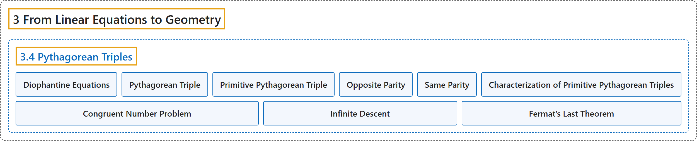

3.4 Pythagorean Triples
Classification

Glossary
| Term | Definition | 中文翻译 | Source |
|---|---|---|---|
| 3.4 Pythagorean Triples 毕达哥拉斯三元组 |
(No definition) | （无定义） | Crisman, 2024, section 3.4 |
| Diophantine Equations 丢番图方程 |
"There are a lot of other interesting questions that one can ask about pure integers, and polynomial equations they might satisfy (so-called Diophantine equations)." | 关于纯整数，以及它们可能满足的多项式方程（即所谓的丢番图方程），还可以问许多别的有趣问题。 | Crisman, 2024, subsection 3.4.1 |
| Pythagorean Triple 毕达哥拉斯三元组 |
"We call a triple of integers \(x,y,z\) such that \(x^2+y^2=z^2\) a Pythagorean triple." | 我们把满足 \(x^2+y^2=z^2\) 的整数三元组 \(x,y,z\) 称为毕达哥拉斯三元组（勾股数）。 | Crisman, 2024, Definition 3.4.2 |
| Primitive Pythagorean Triple 本原毕达哥拉斯三元组 |
"A Pythagorean triple with \(x,y,z\) mutually relatively prime is called a primitive Pythagorean triple." | \(x,y,z\) 两两互素的毕达哥拉斯三元组称为本原毕达哥拉斯三元组。 | Crisman, 2024, Definition 3.4.3 |
| Opposite Parity 奇偶性相反 |
"We say two integers \(p,q\) have opposite parity if one is even and the other is odd, and we say they have the same parity otherwise." | 若两个整数 \(p,q\) 中一个是偶数、另一个是奇数，就说它们奇偶性相反；否则说它们奇偶性相同。 | Crisman, 2024, Definition 3.4.5 |
| Same Parity 奇偶性相同 |
"We say two integers \(p,q\) have opposite parity if one is even and the other is odd, and we say they have the same parity otherwise." | 若两个整数 \(p,q\) 中一个是偶数、另一个是奇数，就说它们奇偶性相反；否则说它们奇偶性相同。 | Crisman, 2024, Definition 3.4.5 |
| Characterization of Primitive Pythagorean Triples 本原毕达哥拉斯三元组的刻画 |
"For a primitive triple \(x,y,z\), where \(x\) is odd, there exist integers \(p,q\) such that \(z=p^2+q^2,\; x=q^2-p^2,\; \text{ and }y=2pq\). Further, \(p\) and \(q\) must have opposite parity as well as be coprime." | 对 \(x\) 为奇数的本原三元组 \(x,y,z\)，存在整数 \(p,q\) 使得 \(z=p^2+q^2,\; x=q^2-p^2,\; \text{ and }y=2pq\)。此外，\(p\) 与 \(q\) 必须奇偶性相反且互素。 | Crisman, 2024, Theorem 3.4.6 |
| Congruent Number Problem 同余数问题 |
"This linked news update from the American Institute of Mathematics gives some background on the congruent number problem, which asks the related question of which Pythagorean triangles with rational side lengths give integer areas." | 这篇来自美国数学研究所的新闻介绍了同余数问题的一些背景，它问的是一个相关的问题：哪些边长为有理数的直角三角形面积是整数。 | Crisman, 2024, subsection 3.4.3 |
| Infinite Descent 无穷递降法 |
"Now we will do something very clever. It is a proof strategy, similar to something the Greeks used occasionally, which Fermat used for many of his proofs, called infinite descent. We are going to take that (hypothetical) triangle, and produce a triangle with strictly smaller sides but otherwise with the same properties – including integer sides and square area!" | 现在我们来做一件非常巧妙的事。这是一种证明策略，与希腊人偶尔用过的方法类似，费马在他的许多证明中都用过，称为无穷递降法。我们要取那个（假设存在的）三角形，造出一个边严格更小、其他性质都相同的三角形，包括边为整数、面积为平方数！ | Crisman, 2024, subsection 3.4.3 |
| Fermat’s Last Theorem 费马大定理 |
"In Exercise 3.6.17 you will use this to prove the famous first case of Fermat’s Last Theorem: There are no three positive integers \(x,y,z\) such that \(x^4+y^4=z^4\)." | 在习题 3.6.17 中，你将用它来证明费马大定理著名的第一个情形：不存在三个正整数 \(x,y,z\) 使得 \(x^4+y^4=z^4\)。 | Crisman, 2024, subsection 3.4.3 |
References
Crisman, K.-D. (2024). Number theory: In context and interactive (June 26, 2024 edition). Gordon College. Retrieved October 29, 2026, from https://math.gordon.edu/ntic/ntic/